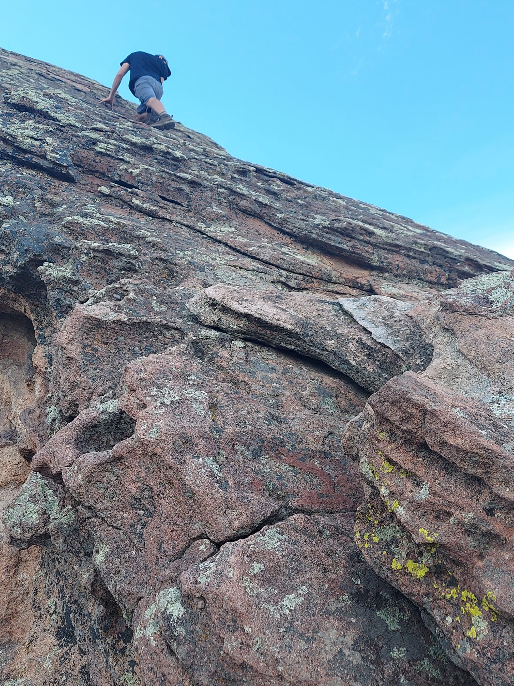
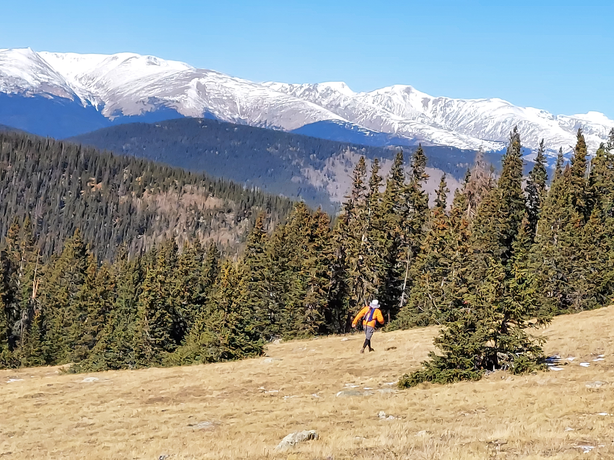
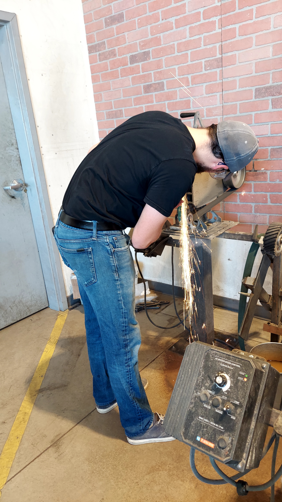

I attended the University of Pittsburgh's main campus from 2013 to 2017 to pursue a Bachelor's of Science in Geology. Additionally, I pursued Latin and Ancient Greek language studies and received a minor in Classics. My college education taught me to adapt to new ideas and embrace them head-on with indefatigable determination.
My post-college career has been in production for about four and a half years now. My greatest desire in my career is to carve out a sustainable niche in a challenging and satistfying position.
My first job out of college at ECS Limited in Pittsburgh, Pennslyvania involved determining the geotechnical properties of prospective construction sites as well as verifying specification conformance of construction materials. In the office, I constructed reports, assessed geographical information system data and databases, performed site history research, and performed multivariable data entry and organization.
After deciding to set sail for Denver, Colorado, I pursued a field work position with Kumar and Associates. There, I verified the specification conformance of various construction materials, including steel, masonry, concrete, soil, and asphalt. It was a very intense and detailed-oriented job where acquisition of accurate data and measurements was tantamount to the success of a projects whose budgets often exceeded millions of dollars.
My current position at Palmetto Environmental Group is highly variable and extremely detail-oriented. In the field, I work alone or with my peers to collect soil and groundwater data. I am also trusted to manage subcontractors to acquire soil and groundwater data and to install groundwater monitoring wells. I am constantly trusted to make judgement calls without consultation of my peers due to my knowledge and experience. In the office, I do a multitude of different things: computer assisted design modeling, mathematical calculations, data analysis, and detailed report construction.
Let's just say I've got a lot of hobbies! Rock-climbing, hiking, biking, running, sourdough, painting, and occassionally knife-making just to name a few. I'm always willing to try new things and am constantly looking to challenge myself mentally and physically. In my free time, I also enjoy coding and learning how to code because it adds extra challenge to my life.